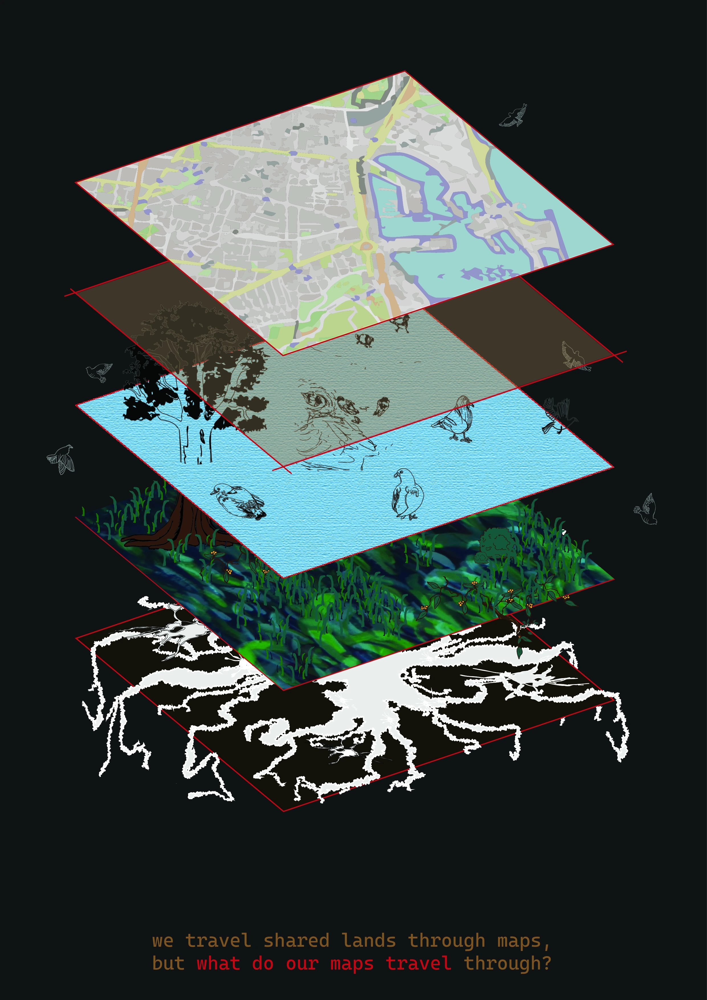

We travel shared lands through maps, but what do maps travel through?
Barcelona, Catalunya
November 2026

How can we use cartography and mapping of landscapes to prioritize more-than-human life relationships within our urban areas? How does this feed the underlying systems of the climate crises, and how can we disrupt them? The choices we make in representing land in our day-to-day media influences how we move around and within them.
How can these interactions be more fruitful, inclusive, playful, challenging, and fair?
I was stimulated by the Icarus Complex Magazine poster prompt about disrupting systems underlying the climate crises.
With this poster, I disrupt the systemic, superficial and anthropocentric visualizations of our environments. It is built through a combination of hand-drawings, digital illustration and digital design. Although a conceptual design, I spent time observing and urban sketching the area as inspiration. The top layer is based off of the Open Street Maps view of my local area in Barcelona. The second layer reflects projection of said ecosystems onto a map. The third visualizes the fauna (specifically the pigeon population), the fourth visualizes the flora, and the fifth shows the fungal networks underlying it all. With the overflowing layers I want to express that there is much excitement, knowledge and beauty missed in the ways we are currently experiencing maps.